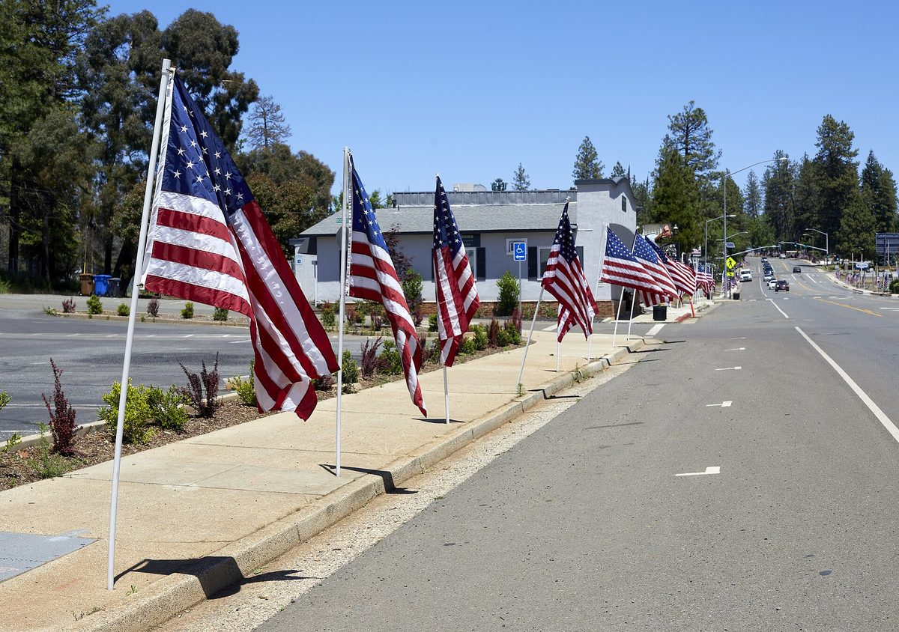

미국 캘리포니아 뷰트 카운티, 1,700에이커 태양광 개발사의 지역 이익 협약안 결정 미뤄…주민들은 환경평가부터 요구

주 허가 절차(AB 205)로 카운티는 허가권 없고 개발사는 지역 기관·비영리단체와 맺은 협약안 내야…연 30만 달러·소방서 부지·소방 50만 달러·보안관 25만 달러 제안, 카운티가 거절하면 다른 비영리단체와 맺을 수도
미국 캘리포니아주 뷰트 카운티 감독위원회는 10월 27일 오로빌에서 열린 회의에서 남부 캘리포니아 개발사 세너지 파워(Cenergy Power)가 치코와 파라다이스 사이 스카이웨이 아래쪽 약 1,700에이커 부지에 계획한 태양광 사업의 지역 이익 협약안을 들었으나, 사업 영향과 저감 대책을 더 알아본 뒤 협약 여부를 정하겠다며 결정을 미뤘다. 이 사업은 주 의회법 AB 205로 생긴 옵트인 인증 절차를 밟고 있어 허가는 카운티가 아니라 캘리포니아 에너지위원회(CEC)가 내리고, 그 대신 개발사는 신청서에 지방 기관이나 비영리단체 최소 1곳과 맺은 지역 이익 협약안을 붙여야 한다. 300MW 규모로 계획된 이 사업에서 회사가 내놓은 안에는 카운티에 주는 연 30만 달러 수입, 소방서 부지 1필지, 뷰트 카운티 소방국 50만 달러·보안관실 25만 달러 시설 보조금이 들어 있고, 회사는 지역 채용과 지역 업체 우대도 더해 발전 용량이 늘면 이익도 커지는 구조라고 설명했다. 세너지 파워의 윌리엄 팜(William Pham)은 주민 의견을 듣고 부지 3분의 1을 보존하고 설비 규모를 크게 줄였으며, 블루오크 숲 약 500에이커는 손대지 않기로 했다고 밝혔다. 주민들은 뷰트 크리크 오염과 테하마 사슴 떼 이동 경로, 물 문제를 들어 환경영향평가가 끝나기 전에는 협약에 동의하지 말라고 요구했고, 은퇴한 공원 관리인 수전 헌(Susan Hearne)은 "누가 선물을 주겠다고 할 때는 조건이 붙어 있다"고 말했다. 회사가 비밀유지계약 서명을 압박했다는 주장도 회의에서 나왔으나 회사는 이를 부인했으며, 카운티가 협약을 거절하더라도 회사는 카운티 안 다른 지방 기관이나 비영리단체와 협약을 맺을 수 있다.
시민에너지 관점
아일랜드는 정부 재생전력 지원을 받는 사업에 발전량 1MWh당 2유로를 15년 동안 지역이익기금에 내도록 제도로 정했지만, AB 205는 협약을 맺으라고만 할 뿐 몫의 크기는 개발사와 상대방의 협상에 맡기고 상대가 거절하면 다른 비영리단체로 바꿀 길까지 열어 두었다. 연 30만 달러와 소방 보조금이 적지 않아 보일 수 있지만, 지급 기간도 알려지지 않은 채 환경평가보다 먼저 서명을 구하는 협약은 주민 눈에 허가의 값을 미리 치르는 거래로 비칠 수 있다. 개발이익을 현금과 보조금으로 나누는 데서 그치지 않고 주민이 지분을 갖는 공동 소유로 가야 수익과 위험을 함께 따지는 자리가 생기고, 환경평가 결과도 주인의 눈으로 검토할 수 있다. 우리도 대형 태양광 허가 절차에 지역 몫을 넣을 때 금액 기준과 주민 출자 참여를 법으로 먼저 정하고, 협약은 환경평가 뒤에 맺도록 순서부터 바로 세워야 한다.
출처: KRCR 2026-10-27 Vincent Rupena 원문 보기
米カリフォルニア州ビュート郡、1,700エーカー太陽光の開発会社が示した地域利益協定案の判断を先送り…住民は環境評価を先にと要求
州の許可手続き（AB 205）で郡に許可権はなく、開発会社は地元機関・非営利団体と結んだ協定案の提出が必要…年30万ドル・消防署用地・消防50万ドル・保安官25万ドルを提案、郡が拒めば別の非営利団体と結ぶ可能性も
米カリフォルニア州ビュート郡の監督委員会は10月27日、オロビルで開いた会合で、南カリフォルニアの開発会社セナジー・パワー（Cenergy Power）がチコとパラダイスの間、スカイウェイのふもとの約1,700エーカーの土地に計画する太陽光事業の地域利益協定案について説明を受けたが、事業の影響と緩和策をさらに把握したうえで協定を結ぶかどうかを決めるとして、判断を先送りした。この事業は州法AB 205で設けられたオプトイン認証の手続きを進めており、許可を出すのは郡ではなくカリフォルニア州エネルギー委員会（CEC）で、その代わり開発会社は申請書に地元の機関か非営利団体の少なくとも1者と結んだ地域利益協定案を添えなければならない。300MW規模で計画されるこの事業で会社が示した案には、郡への年30万ドルの収入、消防署用地1区画、ビュート郡消防局に50万ドル・保安官事務所に25万ドルの施設補助金が含まれ、会社は地元雇用と地元業者の優先も加え、発電容量が増えれば利益も大きくなる仕組みだと説明した。セナジー・パワーのウィリアム・ファム氏（William Pham）は、住民の意見を受けて用地の3分の1を保全し、設備規模を大きく縮小したほか、ブルーオークの林約500エーカーには手を付けないことにしたと述べた。住民らはビュート・クリークの汚染やテハマのシカの群れの移動経路、水の問題を挙げ、環境影響評価が終わる前に協定に同意しないよう求め、退職した公園レンジャーのスーザン・ハーン氏（Susan Hearne）は「誰かが贈り物をくれるというときには、ひもが付いている」と語った。会社が秘密保持契約への署名を迫ったとの主張も会合で出たが、会社はこれを否定しており、郡が協定を拒んだ場合でも、会社は郡内の別の地元機関や非営利団体と協定を結ぶことができる。
市民エネルギーの視点
アイルランドは政府の再生可能電力支援を受ける事業に、発電量1MWhあたり2ユーロを15年間、地域利益基金に拠出するよう制度で定めているが、AB 205は協定を結ぶよう求めるだけで、取り分の大きさは開発会社と相手方の交渉に委ね、相手が拒めば別の非営利団体に切り替える道まで開いている。年30万ドルと消防補助金は少なくないように見えるかもしれないが、支払期間も明らかでないまま環境評価より先に署名を求める協定は、住民の目には許可の代価を前払いする取引に映りかねない。開発利益を現金や補助金で分けるだけにとどまらず、住民が持ち分を持つ共同所有へ進んでこそ、収益とリスクをともに検討する場が生まれ、環境評価の結果も持ち主の目で確かめられる。韓国でも大規模太陽光の許可手続きに地域の取り分を組み込む際には、金額の基準と住民出資の参加をまず法で定め、協定は環境評価の後に結ぶという順序から正すべきだ。
出典: KRCR 2026-10-27 Vincent Rupena 原文を読む
美国加州比尤特县推迟决定1,700英亩光伏开发商的社区利益协议方案…居民要求先做环境评估
依州许可程序（AB 205），县政府无审批权，开发商须提交与当地机构或非营利组织签订的协议方案…提出每年30万美元、消防站用地、消防50万美元、警长办公室25万美元，若县政府拒绝也可另找非营利组织
美国加利福尼亚州比尤特县监事会10月27日在奥罗维尔召开会议，听取了南加州开发商Cenergy Power就其在奇科与帕拉代斯之间、天际路（Skyway）山脚下约1,700英亩土地上规划的光伏项目提出的社区利益协议方案，但表示要进一步了解项目影响和减缓措施后再决定是否签约，暂未作出决定。该项目正在走州法AB 205设立的“选择加入认证”程序，审批权在加州能源委员会（CEC）而不在县政府；作为条件，开发商必须在申请材料中附上与至少1家当地机构或非营利组织签订的社区利益协议方案。在这个规划规模为300MW的项目中，公司提出的方案包括每年向县政府提供30万美元收入、1块消防站用地，以及给比尤特县消防局50万美元、警长办公室25万美元的设施补助；公司还提出优先雇用本地人和本地供应商，并称发电容量越大，利益也越多。Cenergy Power的William Pham表示，公司听取居民意见后保留了三分之一的用地，大幅缩小了设施规模，并决定不动约500英亩的蓝橡树林。居民们以比尤特溪污染、特哈马鹿群迁徙通道和水资源问题为由，要求在环境影响评估完成前不要同意协议；退休公园管理员Susan Hearne说：“有人说要送你礼物的时候，总是附带条件的。”会上还有人指称公司曾施压要求签署保密协议，公司予以否认；即使县政府拒绝签约，公司也可以与县内其他当地机构或非营利组织签订协议。
市民能源视角
爱尔兰规定，获得政府可再生电力支持的项目须按每兆瓦时2欧元、连续15年向社区利益基金出资，而AB 205只要求签订协议，分享多少交由开发商与对方谈判，对方拒绝时还可改找其他非营利组织。每年30万美元和消防补助看似不少，但在支付期限都不清楚的情况下，赶在环境评估之前就要求签字的协议，在居民眼中很可能像是提前支付审批代价的交易。开发收益不能只停留在发放现金和补助，而应走向居民持股的共同所有，这样才会有共同权衡收益与风险的平台，也才能以主人的眼光审视环境评估结果。韩国在大型光伏审批程序中加入地方份额时，也应先以法律明确金额标准和居民出资参与，并把签约放在环境评估之后，先把顺序理顺。
来源: KRCR 2026-10-27 Vincent Rupena 查看原文
California's Butte County holds off on community benefits deal for 1,700-acre solar project as residents call for environmental review first
Under the state permitting path created by AB 205 the county has no say over the permit, but the developer must file a benefits agreement with a local agency or nonprofit; offer includes $300,000 a year, a fire station parcel and grants of $500,000 for fire and $250,000 for the sheriff, and the company could turn to another nonprofit if the county says no
The Butte County Board of Supervisors in California heard a proposed community benefits agreement in Oroville on October 27 for a solar project that Southern California developer Cenergy Power plans on about 1,700 acres near the base of Skyway between Chico and Paradise, but took no action, saying it wanted to understand the project's impacts and mitigation measures before deciding whether to sign. The project is going through the Opt-In Certification Program created by Assembly Bill 205, so the permit will be decided by the California Energy Commission rather than the county; in exchange, the developer must attach to its application a proposed benefits agreement with at least one local agency or nonprofit organization. For the project, planned at 300MW, the company's offer includes $300,000 a year in revenue for the county, a dedicated fire station parcel and capital grants of $500,000 for the Butte County Fire Department and $250,000 for the Sheriff's Office, and the company also pointed to local hiring and preferences for regional vendors, saying benefits would rise with generating capacity. William Pham of Cenergy Power said the company had preserved a third of the property and substantially shrunk the system in response to community feedback, and that about 500 acres of blue oak woodland would be left untouched. Residents urged the board not to agree to any terms before the environmental review is complete, citing possible pollution of Butte Creek, the migration route of the Tehama deer herd and water concerns, and retired park ranger Susan Hearne told supervisors that a gift comes with "strings." Allegations that the company pressured people to sign nondisclosure agreements were raised at the meeting, which the company denied, and even if the county rejects a deal, the company can reach one with another local agency or nonprofit in the county.
Citizen Energy View
Ireland requires projects backed by its state renewable power support scheme to pay €2 per MWh into a community benefit fund for 15 years, whereas AB 205 only requires that an agreement be signed, leaving the size of the share to negotiation and even letting the developer switch to another nonprofit if one partner refuses. $300,000 a year plus public safety grants may not look small, but an agreement sought before the environmental review, with no published payment term, can look to residents like paying in advance for a permit. Sharing development gains should not stop at cash and grants; only co-ownership in which residents hold equity creates a place to weigh returns and risks together and to read the environmental findings as owners. When Korea writes a local share into permitting for large solar farms, it should first set a benchmark amount and a route for resident investment in law, and get the order right by signing agreements only after the environmental review.
Source: KRCR 2026-10-27 Vincent Rupena Read the original